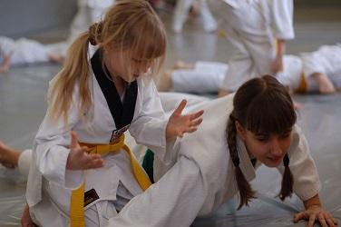
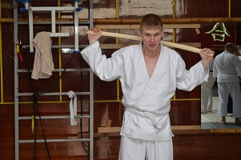
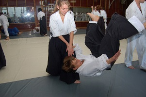
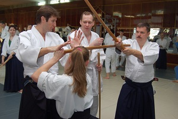

|
Часто задаваемые вопросы
|
|
В: Что нужно, чтобы начать заниматься айкидо?
|
|
Cначала нужно определиться с местом и временем тренировок
(расписание занятий нашего клуба указано на странице
«Залы и расписания»). Далее, мы рекомендуем сходить
на тренировку и посмотретьчто происходит в зале. Если
увиденное соответствует ожидаемому, то обычно после этого вы
разово посещаете занятие.
Форма одежды – свободная: трико и футболка. Хотя если есть
кимоно, то будет неплохо прийти на тренировку именно в нем.
Занимаемся мы босиком. После первого занятия часть вопросов,
как правило, снимается, а если они остаются, то их можно
задать инструктору в зале. Все понравилось? Заполняете
заявление о членстве в клубе и формальная часть закончена.
|
|
|
В: Какова ваша школа айкидо ?
|
|
В нашем клубе изучается классическое айкидо айкикай. Нас
курирует Сафронов Михаил, 5-й дан айкидо айкикай, член
Российской аттестационной комиссии
(дополнительная информация). Он, в свою очередь,
представляет французскую школу айкидо айкикай Кристиана Тисье
на территории России
(дополнительная информация).
|
|
|
В: Меня интересует место, время и стоимость занятий.
|
|
В разделе
«Залы и расписания»
Вы можете найти адреса наших
залов и расписание занятий.
За дополнительной информацией можно обратиться по указанным
на сайте телефонам.
|
|
|
В: С какого возраста принимаете детей?
|
|
У нас работают группы для детей разных возрастов: 7-10 лет,
9-13 лет и 12-15 лет. Утренние и вечерние тренировки для
занимающихся в 1 и 2 смену. От 14 лет предлагаем тренироваться
в группе для взрослых с небольшими ограничениями.
|

|
|
|
В: Есть ли возрастные ограничения?
|
|
Минимальный возраст для приема во взрослую группу – 15 лет.
Максимальных возраст - без ограничений, но Вы должны здраво
оценивать свое физическое состояние, и если есть какие-то
проблемы со здоровьем, Вы должны до начала занятий сообщить
об этом своему инструктору. Порядка 20% занимающихся старше
40. Максимальный возраст занимающегося у нас 70 лет. А в 2012
году проходила аттестация на дан степени в Москве. Возраст
одного из претендентов на 3-й дан был 69 лет.
|
|
|
В: Нужна ли специальная одежда и обувь?
|
|
Начать тренироваться можно в свободной одежде (например,
тренировочный костюм и футболка), но если Вы планируете
заниматься серьезно, то кимоно необходимо для работы в зале.
Идеально подойдет кимоно для дзюдо. Его стоимость в Саратове
от 1500 рублей. По поводу обуви: во всех японских додзё
принято заниматься босиком и у нас тоже. При себе обязательно
иметь сменную обувь, для того чтобы дойти от раздевалки до зала.
|

|
|
|
В: Есть ли у вас соревнования?
|
|
В классическом айкидо нет соревнований.
|
|
|
В: Что такое айкидо?
|
|
Айкидо - самый мягкий, акробатичный и интеллектуальный вид
японской борьбы. Технически оно представляет собой комплексный
метод самообороны, включающий в себя ударную и бросковую технику,
а так же работу с классическим японским оружием . В основе
техники статичные и динамические методы выведения из равновесия,
и последующей фиксации атакующего. При этом не имеют значения
вес, рост и разница в возрасте. Поэтому айкидо открыто для
всех - в нашем клубе занимаются люди любых возрастов, мужчины
и женщины. Занимаясь айкидо, можно очень хорошо развить пластику,
координацию движений, укрепить мускулатуру, обрести уверенность
в себе.
|
|
|
В: Можно ли заниматься женщинам?
|
|
Женщин изучающих айкидо довольно много, гораздо больше чем,
в других видах восточных единоборств. Причина этого заключается
в том, что для занятий айкидо не нужно быть ходячей горой
мускулов - занятия ничуть не сложнее (хотя и не менее интересны!)
обычных танцев. Занимаясь с нами, Вы улучшите мышечный тонус,
разовьёте гибкость, укрепите своё здоровье. Помимо хорошей формы,
отличной фигуры и пластики, занятия дадут Вам ощущение защищенности
и уверенности в себе.
|

|
|
|
В: Чем отличается Айкидо от других Будо: дзю-до и каратэ?
|
|
Основное отличие в целях, которые достигают занимающиеся. В
айкидо цель не победа над партнером, а достижение гармоничного
взаимодействия с ними и самопознание. Как следствие - дружелюбная,
миролюбивая атмосфера, в которой проходят занятия. Если говорить
о технике, то, особенность айкидо – это ярко выраженный
оборонительный акцент. Освобождение от захватов и защита от
ударов производятся с максимальным использованием инерции и
силы партнёра. Соответственно меньше, чем в дзюдо внимание
уделяется силовым броскам, и меньше чем в карате, активным
атакующим действиям.
|
|
|
В: Смогу ли я защитить себя от нападения не только в додзё?
|
|
Несомненно. Это подтверждается активным использованием
технического и методологического арсенала айкидо практически
в любом прикладном методе подготовки, солдата, телохранителя,
полицейского. Однако необходим определённый, достаточно высокий
технический и, что очень важно, психологический уровень подготовки.
Технически, айкидоист готов к самозащите на уровне первого дана,
но результат в большей степени зависит от психологического
состояния, в данный конкретный момент.
|
|
|
В: Какие бывают разряды и как скоро мне его присвоят?
|
|
После 6 месяцев занятий проводится экзамен на 5-ой кю (первая
ученическая степень), ещё через 6 месяцев - на 4-ый кю. Далее
интервалы между экзаменами увеличиваются и после получение
последнего ученического кю (1го кю) можно сдать экзамен на
первую мастерскую степень - 1-й Дан. К тому времени вы уже
прозанимаетесь 5-6 лет. Далее, через 2 года после получения
1-го Дана – экзамен на 2-ой Дан, через три года после получения
2-го – экзамен на 3-ий Дан и так далее. Даны с 1-го по 4-ый
присваиваются за личный технический уровень, с 5-го по
8-ой - за вклад в развитие айкидо и за учеников, получивших
мастерские степени.
|
|
|
В: изучается ли в айкидо работа с оружием?
|
|
Да. На наших тренировках мы работаем с боккеном (деревянный
меч). Это субботние общеклубные тренировки. Они не входят в
обязательную программу изучения, но посещая их, вы будете
быстрее осваивать техническую базу и приобретете уникальные
навыки и знания. По нашим данным в Саратове больше нигде не
проводятся тренировки с классическим японским оружием по
традиционной методике.
|

|
|